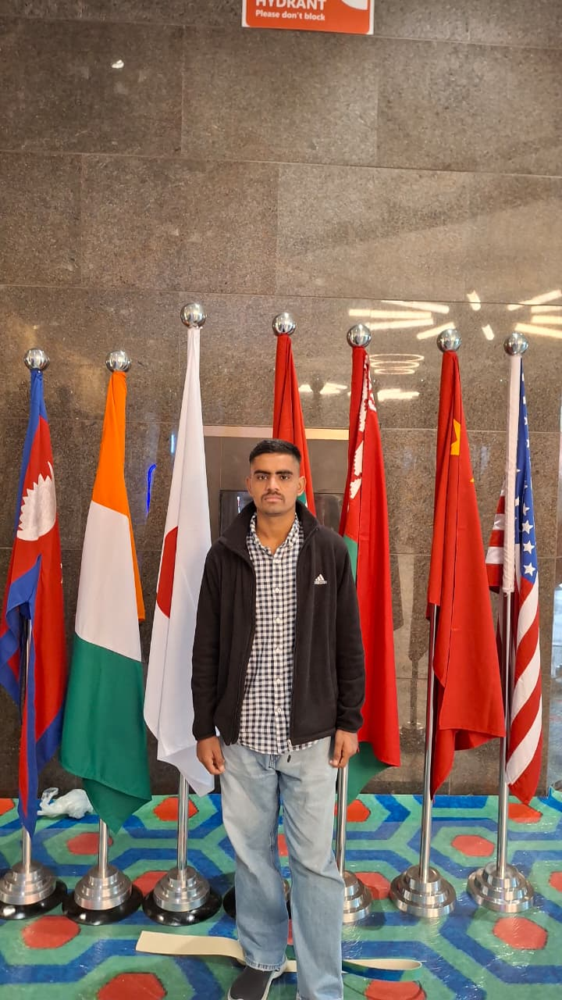
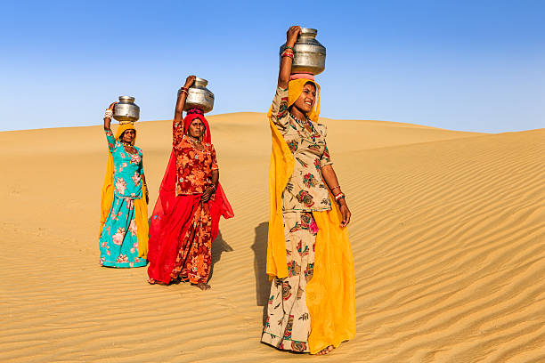

प्रताप सिंह भाटी
दिल्ली विश्वविद्यालय | जैसलमेर| हिंदी पत्रकारिता छात्र | लेखन प्रेमी


संग्रह: कहानियाँ
रेत के भीतर का खोया नगर
Read More +सोनार किले का आखिरी प्रहरी
Read More +प्यास, पनिहारी और पालर पानी
Read More +सीमा का वो आखरी चिराग
Read More +दो शहरों की दास्तां
Read More +मरुस्थल का न्याय
Read More +
×